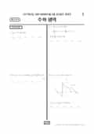

문제지

2027학년도 6월 모의평가 · 2026년 6월 시행
2027학년도 6모 수학 미적분 1등급컷은 원점수 88점(역산값), 표준점수 최고점은 138점입니다.
원점수 1등급컷은 공식 발표값이 아니라 EBSi·입시기관 값입니다. 등급별 값은 등급컷 표, 출처 구분은 데이터 원칙에 있습니다.

시험지를 먼저 풀어 보세요. 등급컷·표준점수·난이도는 흐리게 가려 뒀어요.
| 등급 | 원점수 | 표준점수 |
|---|---|---|
| 1 | 88 | 129 |
| 2 | 80 | 123 |
| 3 | 73 | 118 |
| 4 | 64 | 111 |
| 5 | 40 | 94 |
| 6 | 18 | 78 |
| 7 | 11 | 73 |
| 8 | 6 | 69 |
등급별 컷 · 입시기관 역산값 · 만점 100점
정답 변경 없음
이의신청 3문항
시험 전체 관련 보도 4건은 2027학년도 6월 모의평가 회차 페이지에 모아 두었어요.
EBSi 응답자 기준으로 가장 많이 틀린 문항은 22번(4점, 주관식)이고, 오답률은 94.5%입니다. 오답률 50%를 넘은 문항은 8개입니다.
| 순위 | 문항 | 배점 | 오답률 | 정답 | 많이 고른 오답 |
|---|---|---|---|---|---|
| 1 | 22번 | 4점 | 94.5% | 32 | 주관식 |
| 2 | 21번 | 4점 | 88.1% | 11 | 주관식 |
| 3 | 30번 | 4점 | 87.4% | 20 | 주관식 |
| 4 | 29번 | 4점 | 87.3% | 54 | 주관식 |
| 5 | 28번 | 4점 | 69.7% | ③ | ④ 20.2% |
| 6 | 15번 | 4점 | 58.9% | ④ | ⑤ 23.4% |
| 7 | 14번 | 4점 | 53.9% | ③ | ④ 22.1% |
| 8 | 20번 | 4점 | 50.7% | 48 | 주관식 |
| 9 | 13번 | 4점 | 46.3% | ⑤ | ④ 20.6% |
| 10 | 27번 | 3점 | 36.7% | ① | ③ 12.6% |
| 11 | 11번 | 4점 | 36.7% | ① | ④ 12.2% |
| 12 | 19번 | 3점 | 31.8% | 9 | 주관식 |
| 13 | 12번 | 4점 | 31.2% | ① | ③ 9.7% |
| 14 | 6번 | 3점 | 27.7% | ① | ⑤ 11.3% |
| 15 | 9번 | 4점 | 27.3% | ③ | ② 11.6% |
EBSi 가채점 응답자 기준 · 전 문항 중 오답률 상위 15문항
출처: EBSi 역대 등급컷·오답률 공개 화면. 가채점에 참여한 EBSi 이용자 응답이라 전체 응시자 정답률과는 다를 수 있습니다.
발행 기관: 한국교육과정평가원(KICE). 파일 위치: 이 사이트가 보관한 사본. 저작권은 발행 기관에 있습니다. 원본과 다르거나 게시 중단이 필요하면 연락처로 알려 주세요. 등급컷 출처 구분은 데이터 원칙에서 설명합니다.
막대 색은 역대 대비 난이도 · 진한 막대가 이 시험 · 막대를 누르면 그 회차로 이동
공통과목 22번(4점)은 a1=1, a3=4이고 a2n=an+1, a4n+1=a4n+3=an+4를 만족시키는 수열에서 ak=10이 되는 k의 개수를 구하는 귀납적 정의 수열 문항입니다. 지난해 6월·9월 모의평가와 수능 22번이 모두 지수·로그함수였던 것과 달리 수열이 다시 나와 수험생을 놀라게 했고, 대성학원은 문항 자체보다 조건을 만족하는 경우를 나누는 과정에서 실수가 나오기 쉽다고 봤습니다. EBSi 가채점 응답자의 94.5%가 틀렸습니다.
대성학원이 공통과목 최고난도로 꼽은 것은 21번(88.1%)입니다. 최고차항의 계수가 1인 삼차함수 f(x)에 대해 f(α)=f′(t)−4t²+4를 만족시키는 α의 최댓값을 g(t)라 정의하고, g(t)가 t=3에서만 불연속이라는 조건으로 f(2)를 구하게 한 '새롭게 정의된 함수의 연속성' 문항입니다. 15번은 비교적 평이했다는 평가입니다.
대성학원은 미적분을 지난해 수능보다 조금 어렵거나 비슷한 수준으로 보고 28번을 최고난도로 꼽았습니다. 직선 y=t가 두 곡선 y=e^(2x)−e^(−x)+1, y=e^(2x)와 만나는 점에서 다시 수직선을 그어 정의한 두 함수 f(t), g(t)로 극한값을 구하는 문항으로, 조건 해석은 전형적이었지만 이계도함수 형태의 극한을 계산하는 양이 많아 시간 안에 실수 없이 풀기 어려웠습니다.
오답률로는 30번(87.4%)과 29번(87.3%)도 높았습니다. 30번은 삼차함수로 정의한 함수가 실수 전체에서 미분가능하고 두 점에서 극값을 갖는 조건을 다뤘고, 29번은 정수 항 등차수열과 양수 항 등비수열의 급수에 코사인이 결합된 문항이었습니다. 대구MBC 분석도 세 선택과목 모두 28번이 가장 어려웠고 계산 능력을 요구하는 문항이 많았다고 정리했습니다.
22번 소재가 6월(수열)과 9월(지수·로그)에 서로 달랐다는 점은 수능 22번을 특정 단원으로 예상하고 준비하는 것이 위험하다는 뜻입니다. 이 회차의 22번은 작은 k부터 직접 나열해 규칙을 찾는 연습에, 21번은 g(t)의 그래프를 t에 따라 그려 보며 불연속이 생기는 지점을 찾는 연습에 활용하기 좋습니다. 시험 전체 흐름은 이 회차의 회차 해설에 정리했습니다.